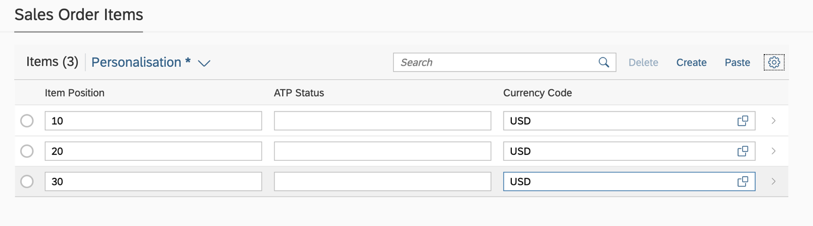
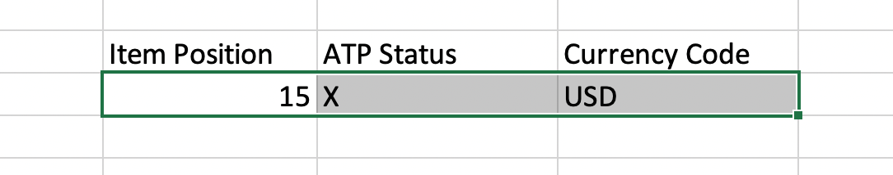
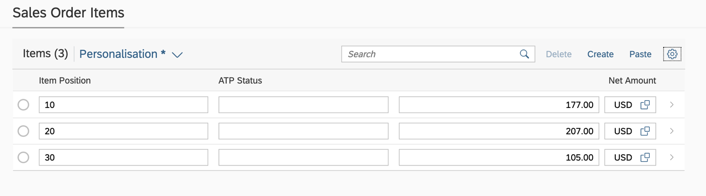
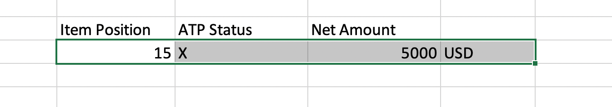
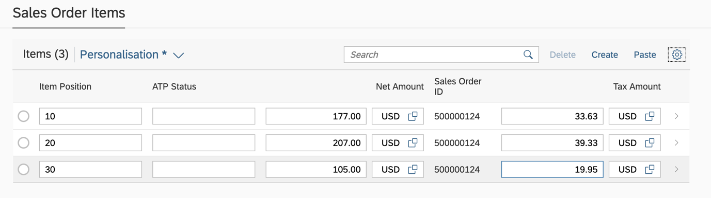
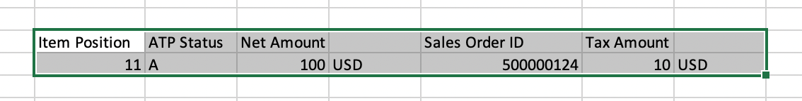
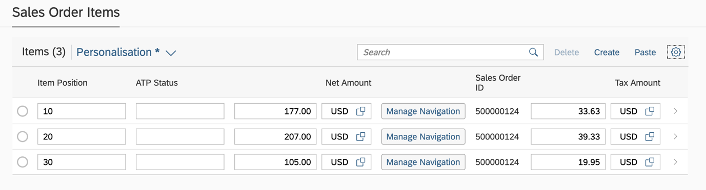
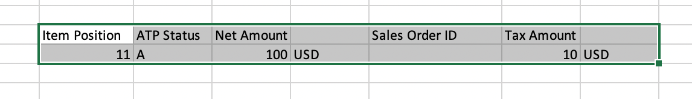

Copying and Pasting from Microsoft Excel to Editable Tables
Users can copy and paste data from Microsoft Excel to responsive tables and grid tables.
-
The app is draft-enabled.
-
Inline creation is enabled for the object page table. See also Enabling Inline Creation of Table Entries on Object Page.
If these prerequisites are fulfilled, a Paste button is shown in the table toolbar. Once the user has copied data from Microsoft Excel, the focus can be anywhere in the table except for the cells. The user needs to trigger the browser paste ( CTRL + V for Microsoft Windows, CMD + V for MacOS). The paste function in a smart table is available for these scenarios:
-
In edit mode, the smart table only has editable fields.
Sample data:
 In edit mode, the smart table only has editable fields. It also contains multiple editable fields in a single column, for example, value and unit of measure.
Sample data:
-
The smart table has both editable and non-editable fields.
Sample data: -
The smart table contains an inline action.
Sample data:
